Mascotes da Copa do Mundo
De Willie a La'eeb: a história dos personagens que deram vida e alegria a cada edição do mundial.
A História dos Mascotes
Os mascotes da Copa do Mundo surgiram pela primeira vez na edição de 1966, na Inglaterra, com o leão Willie. Desde então, cada país-sede cria um personagem que representa sua cultura, identidade e espírito de hospitalidade. Os mascotes se tornaram parte fundamental da identidade visual do torneio, servindo como embaixadores do evento e conectando torcedores de todas as idades ao espetáculo do futebol.
Ao longo das décadas, os mascotes evoluíram de simples desenhos para personagens 3D complexos, refletindo tradições locais, fauna nativa e valores universais do esporte. Cada um carrega em si uma mensagem: seja de alegria, diversidade, sustentabilidade ou fair play.
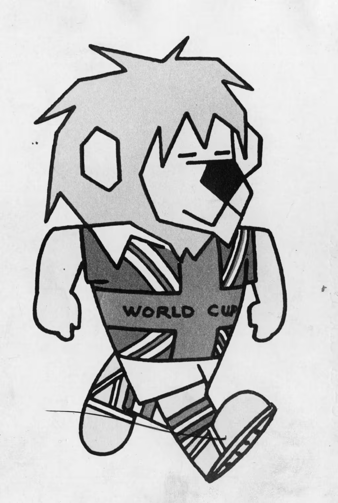
Willie
InglaterraUm leão vestindo a camisa com a bandeira do Reino Unido, simbolizando a seleção inglesa conhecida como "Three Lions". Willie representou o orgulho nacional e foi o primeiro mascote oficial de uma Copa do Mundo.
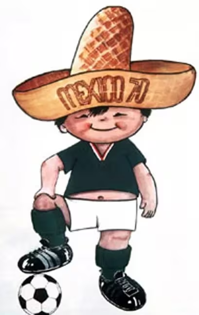
Juanito
MéxicoUm menino com trajes típicos mexicanos e um sombrero. Juanito representou a juventude e a hospitalidade do povo mexicano, recebendo o mundo com alegria na primeira Copa transmitida ao vivo em cores.
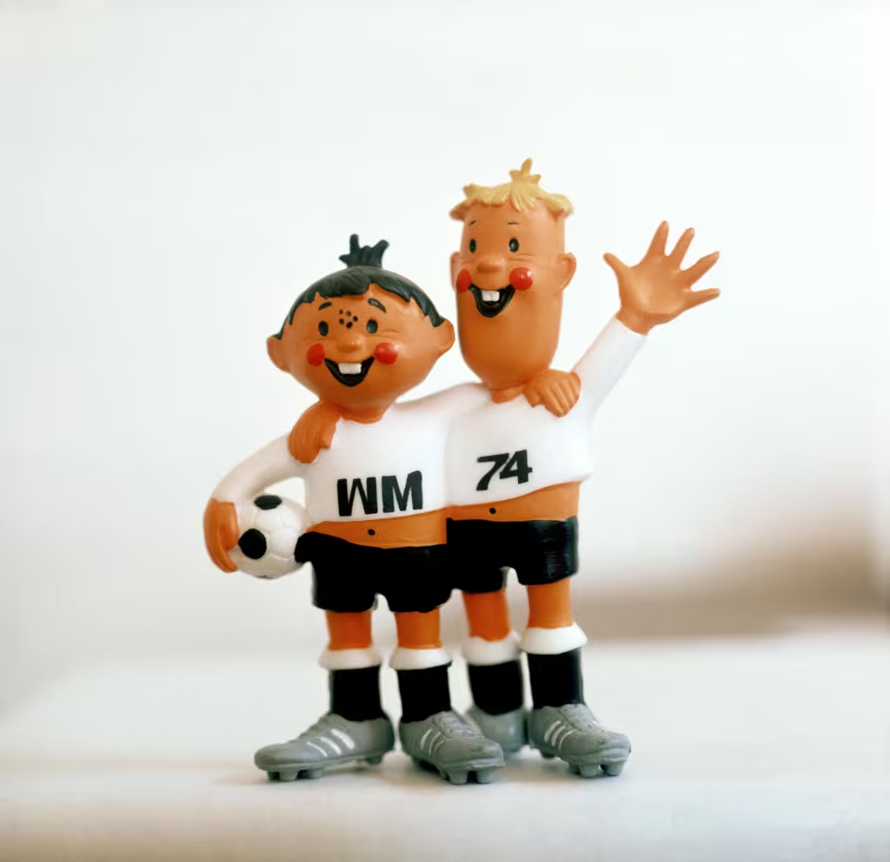
Tip e Tap
Alemanha OcidentalDois meninos vestindo o uniforme da seleção alemã, com as letras "WM" (Weltmeisterschaft / Campeonato Mundial). Simbolizaram o trabalho em equipe, a amizade e a união entre os povos.
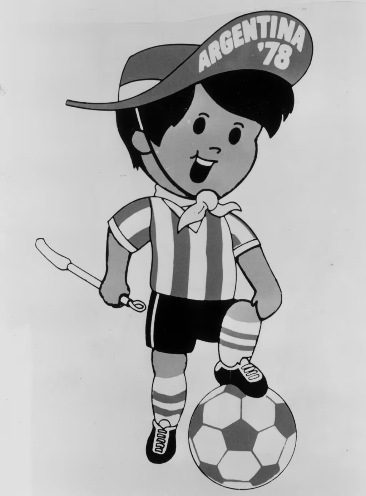
Gauchito
ArgentinaUm menino vestido como um jovem gaúcho, com lenço no pescoço, chapéu e chicote. Representou as tradições culturais argentinas dos pampas e a paixão do país pelo futebol.
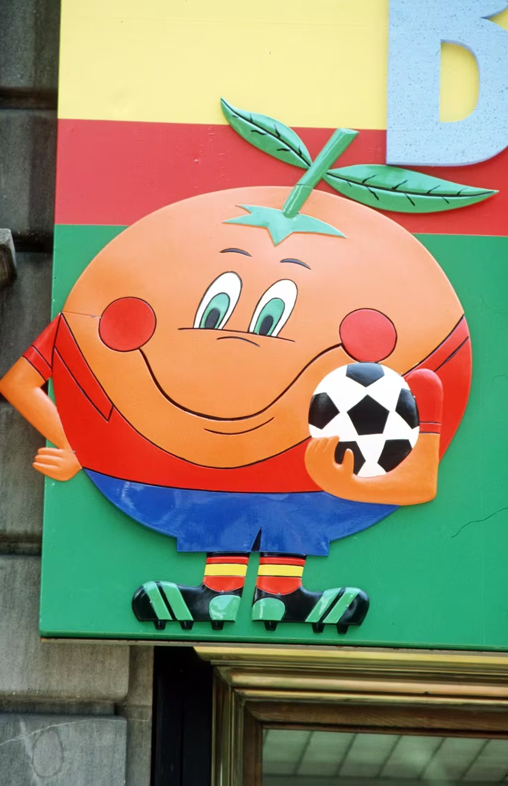
Naranjito
EspanhaUma laranja sorridente vestindo o uniforme da seleção espanhola. Representou a vitalidade, o clima ensolarado e a agricultura da Espanha, tornando-se um dos mascotes mais queridos da história.
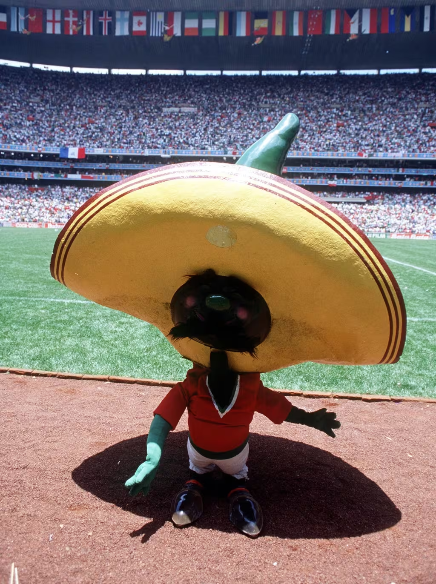
Pique
MéxicoUma pimenta jalapeño com bigode e sombrero, segurando uma bola de futebol. Pique simbolizou a culinária picante mexicana e o temperamento ardente do país na segunda Copa sediada no México.
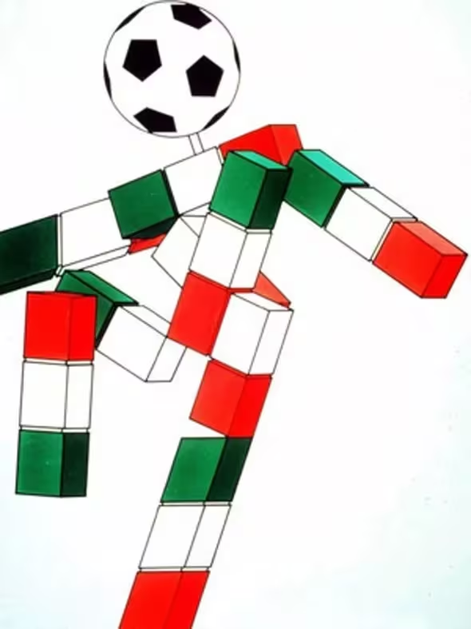
Ciao
ItáliaUma figura estilizada formada por blocos nas cores da bandeira italiana, com uma bola de futebol como cabeça. O nome significa "Olá" em italiano, simbolizando as boas-vindas da Itália ao mundo.
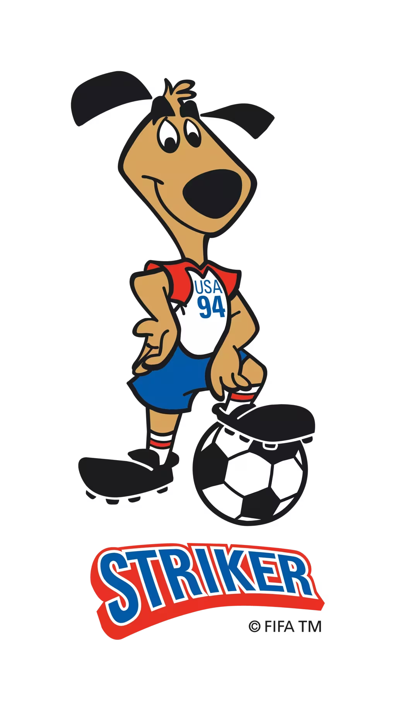
Striker
Estados UnidosUm cachorro vestindo o uniforme dos EUA, com camisa vermelha, branca e azul. Striker representou o espírito amigável e enérgico americano, ajudando a popularizar o futebol no país.
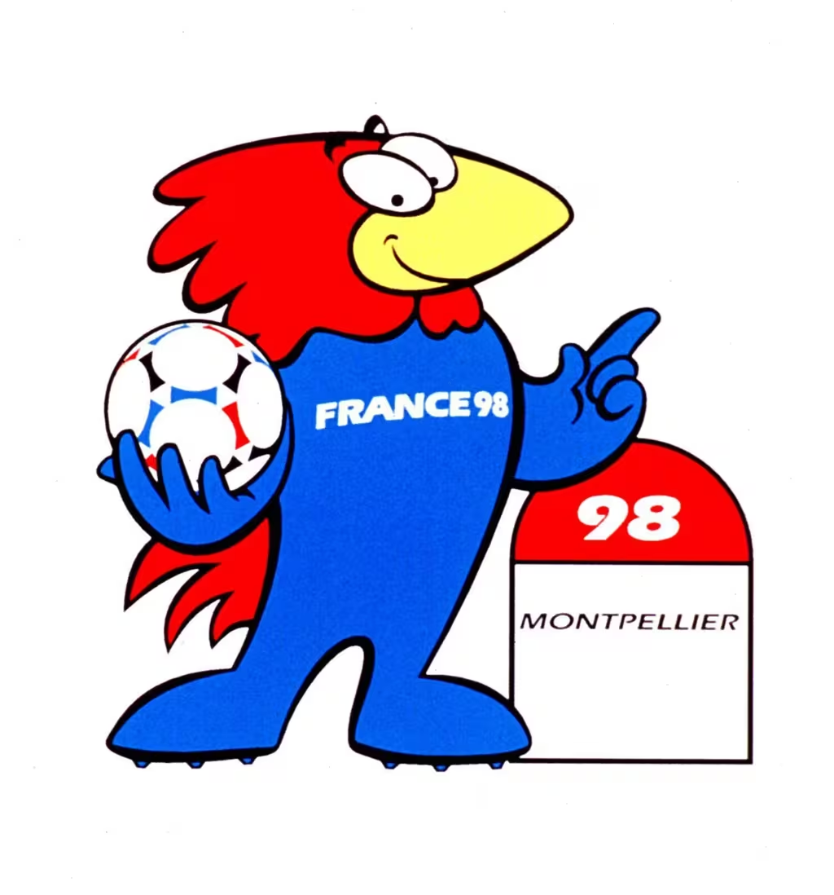
Footix
FrançaUm galo azul, símbolo nacional da França ("Le Coq Gaulois"). O nome combina "football" com o sufixo gaulês "-ix". Footix se tornou extremamente popular, representando a coragem e o orgulho francês.
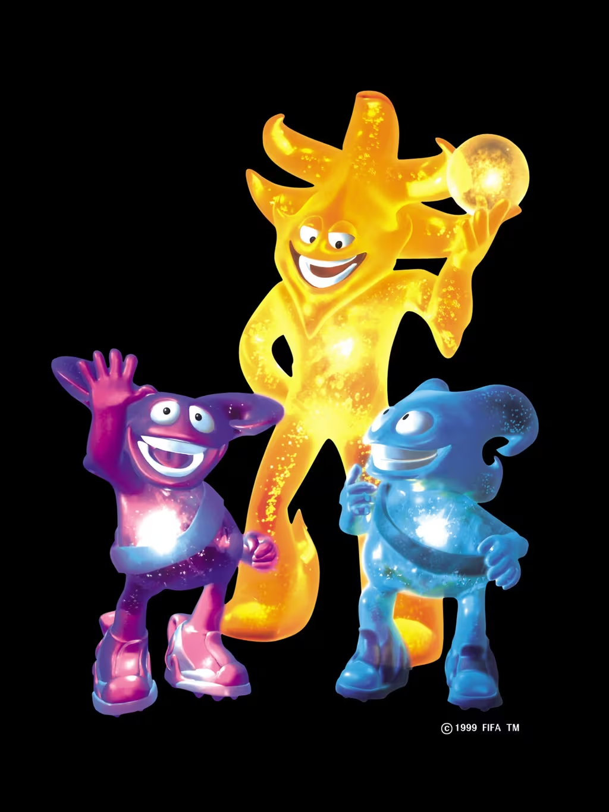
Ato, Kaz e Nik
Coreia do Sul / JapãoTrês criaturas futuristas chamadas "The Spheriks", geradas por computador. Foram os primeiros mascotes digitais, simbolizando a visão tecnológica e a união de dois países co-sedes pela primeira vez.
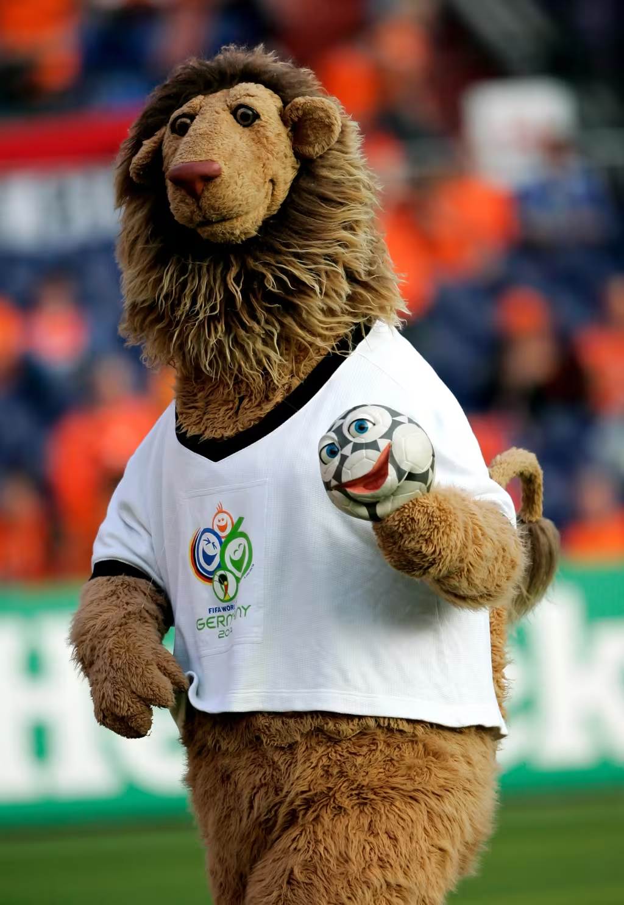
Goleo VI e Pille
AlemanhaUm leão acompanhado de uma bola de futebol falante chamada Pille. Goleo representou a coragem e a tradição futebolística alemã. O "VI" referencia o número da edição na Alemanha.
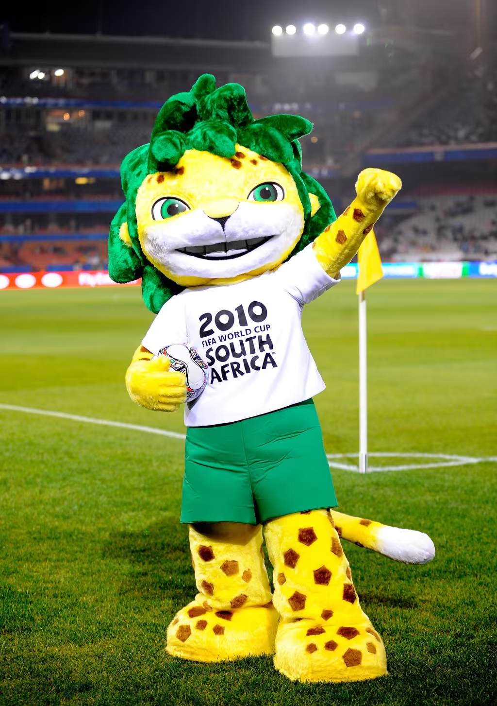
Zakumi
África do SulUm leopardo de cabelos verdes. "ZA" é a sigla da África do Sul e "kumi" significa "dez" em diversas línguas africanas. Zakumi representou a alegria, a diversidade e a fauna do continente africano.

Fuleco
BrasilUm tatu-bola, espécie ameaçada de extinção no Brasil. O nome é a junção de "Futebol" + "Ecologia", promovendo a conscientização ambiental. Vestindo verde e amarelo, Fuleco representou a biodiversidade brasileira.
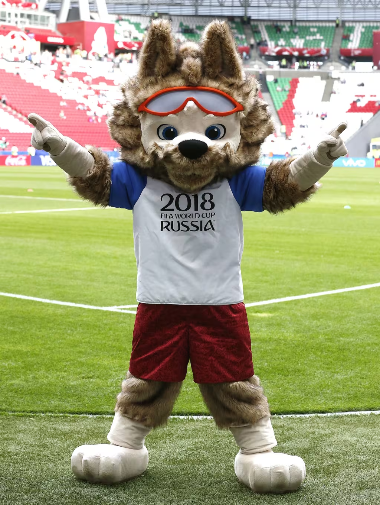
Zabivaka
RússiaUm lobo usando óculos esportivos, cujo nome significa "aquele que marca gols" em russo. Zabivaka simbolizou a diversão, o fair play e o espírito aventureiro, conectando a fauna russa ao futebol.
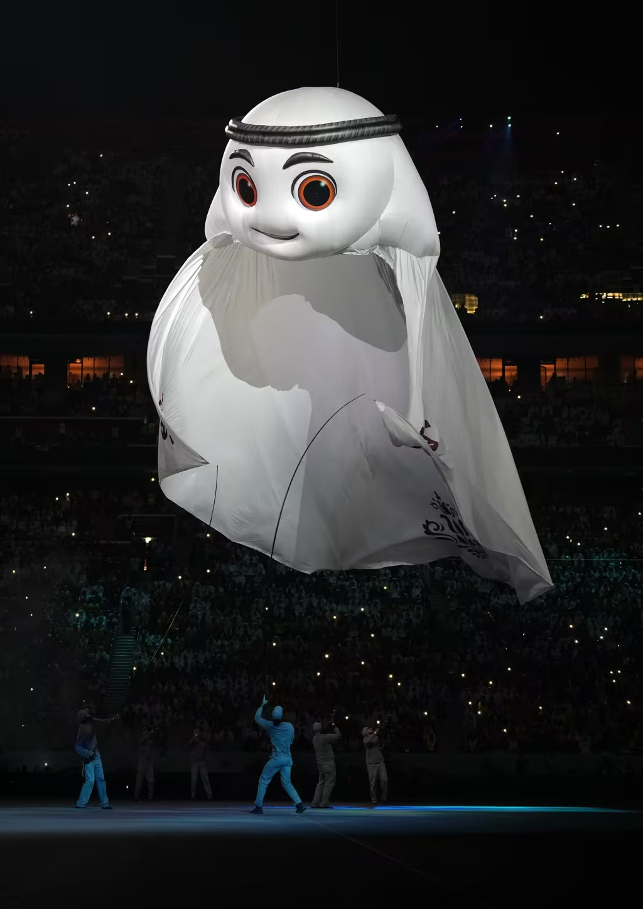
La'eeb
QatarUm personagem lúdico inspirado no keffiyeh (lenço tradicional árabe). O nome significa "jogador super habilidoso" em árabe. La'eeb representou o espírito acolhedor e a cultura do Qatar.
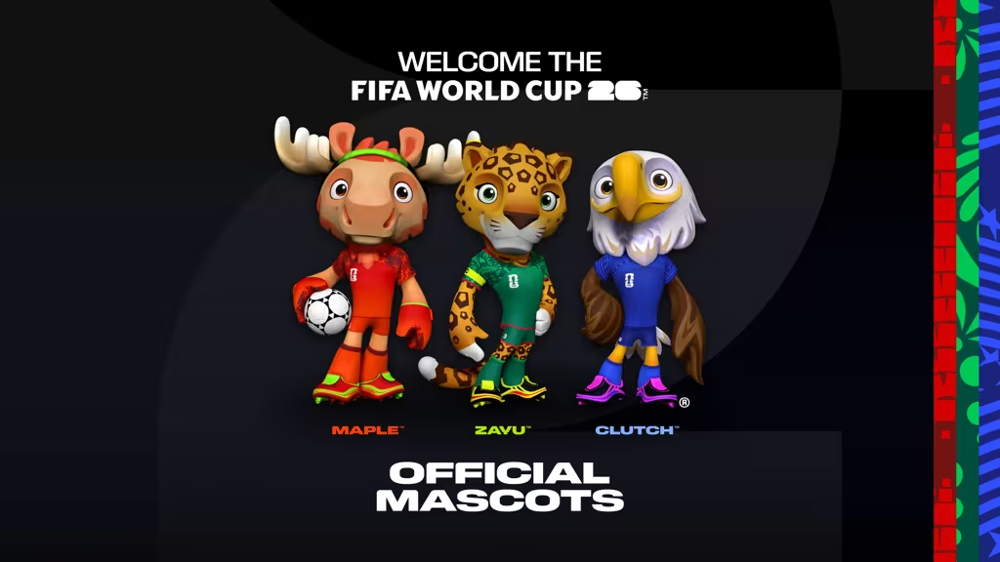
Copa 2026
EUA / México / CanadáA Copa do Mundo de 2026 será a primeira com três países-sede e com 48 seleções. O mascote representa a diversidade cultural e a união do continente norte-americano para sediar o maior evento esportivo do planeta.